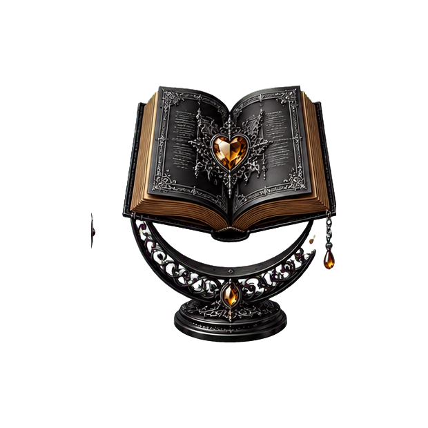

Bookmark waiting
A real book and progress note will replace this.
Content warnings—may contain spoilers
Core warnings, intensity, and spoiler-marked details will appear here.
Hobby Hub / Books
What I am reading, what I recommend, what I abandoned, and which books left fingerprints all over my own storytelling.

Future shelves
Filter by author, status, recommendation, favorite, genre, mood, intensity, or the project a book helped infect.
The first three are pending
Each entry will explain why I recommend—or do not recommend—it, my reading status and dates, genre, mood, intensity, legal book links, and how it influenced my work.
A real book and progress note will replace this.
Core warnings, intensity, and spoiler-marked details will appear here.
Only an actual recommendation earns this chair.
Expandable so you choose how much warning detail to reveal.
An honest reason for stopping will appear without declaring the book objectively evil.
Warnings remain useful even when my verdict is not favorable.